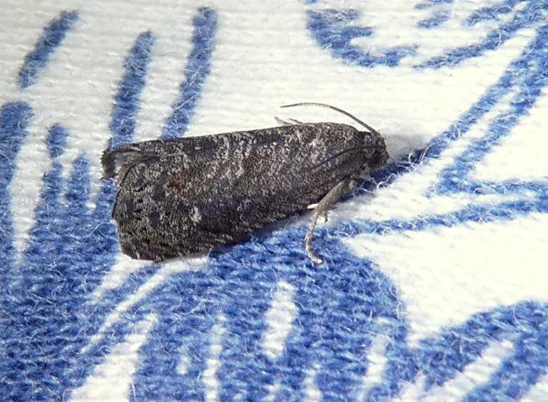

昆虫 · 动物界
梨小食心虫 Grapholita molesta

幼虫先蛀食桃梢再转蛀梨果的细小蛾类，蛀梢下垂枯死、果心变黑，是北方果园的主要害虫。
- 分类
- 门节肢动物门纲昆虫纲目鳞翅目科卷蛾科属小食心虫属
- 栖息环境
- 桃园、梨园、苹果园及贮果场所
- 地理分布
- 中国南北果区及日本、朝鲜半岛、欧洲、北美
- 保护级别
- 常见果树害虫，无保护需求
物种志
梨小食心虫的成虫翅展约一至一点五厘米，体灰褐色，前翅前缘有十余条黑白相间的斜纹，翅面散生灰白色鳞片，停歇时两翅合拢呈屋脊状。幼虫初孵时乳白色，取食后变为淡红色，体长约一厘米。雌蛾把卵产在桃树嫩梢或梨果表面，幼虫孵化后从梢尖蛀入，向下取食髓部。
它分布于中国南北果区以及日本、朝鲜半岛、欧洲和北美，主要危害桃、梨、苹果、李和杏。幼虫在桃梢内取食约十天，梢尖随即萎蔫下垂，随后转梢或转果，梨果被蛀后蛀孔周围变黑腐烂，俗称黑膏药。它以老熟幼虫在树皮裂缝、果筐和土缝中结茧越冬，一年发生三至四代。防治上常用剪除虫梢、果实套袋和性诱剂迷向，桃梨混栽的果园发生更重。
形态与习性
- 翅展约一至一点五厘米，灰褐色
- 翅纹前翅前缘十余条黑白相间斜纹
- 蛀梢幼虫从梢尖蛀入，梢尖萎蔫下垂
- 转果蛀孔周围变黑腐烂，俗称黑膏药
- 越冬老熟幼虫在树皮缝、果筐中越冬
- 防治剪虫梢、套袋、性诱剂迷向
趣味知识
- 它一辈子要换两次家，先在桃梢里住，再搬到梨果里住。
- 梨果上那个发黑的蛀孔被果农叫做黑膏药，一看便知是它干的。
- 桃树和梨树挨着种，它就能一路吃过去，所以果园讲究树种布局。